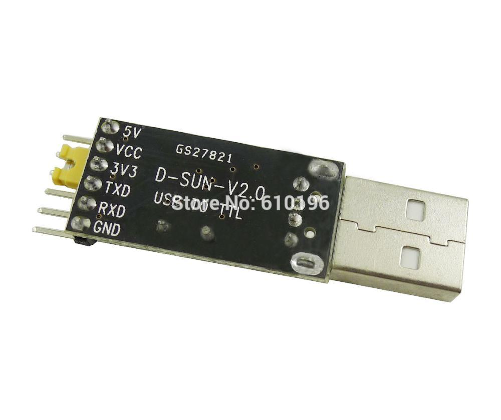

Sonoff Basic
Zasilanie: 90-250v AC 50/60Hz
Maksymalne obciążenie: 10A/2200W
1 przekaźnik
- Maciej Małecki -
- Marcin Iwanczewski -
Sonoff Basic
Zasilanie: 90-250v AC 50/60Hz
Maksymalne obciążenie: 10A/2200W
1 przekaźnik


Sonoff 4CH
Zasilanie: 100-240V AC 50/60Hz
Maksymalne obciążenie: 10A/2200W/Przekaźnik 16A/3500W/Total
4 przekaźniki
Mocowanie na szynie DIN

Sonoff Slampher
Zasilanie: 90-250V
Maksymalne obciążenie: 2A
1 przekaźnik
Sterowanie RF 433Mhz
Oprawa żarówki E27

Shelly 1
Zasilanie: AC 110-230V 50/60Hz / DC 12,24-60V
Maksymalne obciążenie: 16A
1 przekaźnik
Montaż w puszce elektrycznej
.jpg)


ESP-01
512KiB Flash, 2xGPIO, Tx, Rx
ESP-01S
1MiB Flash, 2xGPIO, Tx, Rx
ESP-07
1MiB Flash, 9xGPIO, ADC, Tx, Rx
Antena ceramiczna + gniazdo
ESP-12F
4MiB Flash, 11xGPIO, ADC, Tx, Rx
Antena PCB


Wemos D1 Mini / Wemos D1 Mini Pro
4MiB Flash (16MiB - Pro), ESP-12F (ESP8266EX - Pro), 8xGPIO, ADC, Tx, Rx
Micro USB (Mini: CH340, Pro: CP2104), Reset button, Flash mode
Antena PCB (Mini), Antena ceramiczna + gniazdo (Pro)
NodeMCU V2/V3
4MiB Flash, ESP-12E, 8xGPIO, ADC, Tx, Rx
Antena PCB, Micro USB (V3: CH340, V2: CP2104)
Flash Button, Reset Button
Wemos D1 Mini
ESP-12F/S

Breakout
Flashowanie przez USB:
automatyczny flash-mode + reset
Flashowanie przez Tx/Rx (serial):
Sonoff Basic PINy
USB-Serial Konverter (CH341)

Stara dokumentacja:
https://www.letscontrolit.com/wiki/index.php/Main_PageNowa dokumentacja:
https://espeasy.readthedocs.io/en/latest/Pakiet instalacyjny oprócz obrazów i źródeł, zawiera także niezbędne oprogramowanie dla systemu Windows.
_1M.bin - dla modułów z 1MiB Flash,_4M1M.bin - dla modułów z 4MiB Flash,blank_xxx.bin - gdy coś pójdzie źle,_VCC.bin - obsługa mierzenia VCC z użyciem ADC.Pierwsze uruchomienie (AP)


Pierwsze uruchomienie (AP)


esptool.py --port /dev/ttyUSB0 read_flash 0x00000 0x100000 image1M.binesptool.py --port /dev/ttyUSB0 erase_flashesptool.py --port /dev/ttyUSB0 write_flash -fm dout 0x0 tasmota.bin
SwitchMode1 1
SwitchTopic 0
Rule1
ON Switch1#state=1 do publish stat/tasmota_0F93E7/PIR1 ON ENDON
ON Switch1#state=0 do publish stat/tasmota_0F93E7/PIR1 OFF ENDON
Rule1 1

Odbieranie wiadomości od Tasmoty
mosquitto_sub -h HOST -t TOPIC -p PORT